Du arbeitest hier nicht nur eine Abfolge von Namen ab. Du untersuchst, warum alte Modelle nützlich waren, wo sie scheiterten und weshalb in der Physik neue Modelle entstehen mussten.
Wie kann ein Atom gleichzeitig aus fast leerem Raum bestehen, eine kleine massereiche Mitte besitzen und trotzdem nur bestimmte Energieniveaus zulassen?
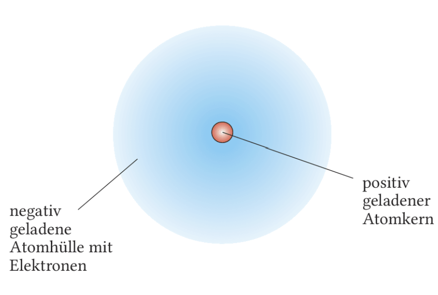
Du startest mit der Übersicht. Danach gehst du auf einer großen Inhaltsseite von Demokrit bis zum Orbitalmodell. Anschließend arbeitest du an Linienspektren, dem Franck-Hertz-Versuch und dem Potentialtopf weiter. Danach festigst du alles auf einer Transferseite. Am Ende sicherst du die Kerngedanken und überprüfst deine Ergebnisse über die Auswertung.
Hier verfolgst du, wie sich das Atombild Schritt für Schritt verändert hat. Achte immer auf zwei Fragen: Was konnte das Modell erklären, und an welcher Beobachtung kam es an seine Grenze?
Schon im 5. Jahrhundert v. Chr. entstand die Idee, dass Materie nicht beliebig teilbar ist. Irgendwann müsse man bei kleinsten Teilchen ankommen, die nicht weiter zerlegt werden können. Diese Teilchen nannten sie atomos, also unteilbar.
Dalton machte daraus Anfang des 19. Jahrhunderts ein naturwissenschaftliches Modell. Atome eines Elements sind in seinem Bild gleichartig, Atome verschiedener Elemente unterscheiden sich vor allem durch ihre Masse. Verbindungen entstehen, wenn sich Atome in festen Zahlenverhältnissen zu Molekülen verbinden.
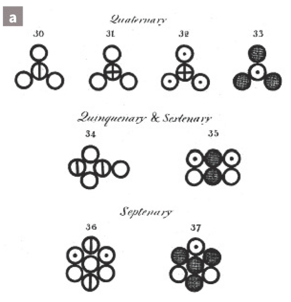
Mit Demokrit beginnt die Idee kleinster Bausteine. Dalton macht daraus ein brauchbares Modell für Elemente und chemische Verbindungen. Das Atom ist hier aber noch eine kompakte, unteilbare Kugel.
Ende des 19. Jahrhunderts entdeckte J. J. Thomson das Elektron. Damit war klar: Das Atom ist nicht unteilbar. Es muss aus kleineren geladenen Bestandteilen bestehen.
Sein Vorschlag war das Rosinenkuchenmodell: Eine positiv geladene Masse füllt das Atom aus, darin sitzen die negativ geladenen Elektronen. So bleibt das Atom insgesamt nach außen neutral.
Dieses Modell erklärt, dass Atome Elektronen verlieren oder aufnehmen können und dadurch Ionen entstehen. Es erklärt aber noch nicht, warum sich Ladung und Masse im Atom so ungleich verteilen.
Um 1910 arbeitete Rutherford an der Streuung von $\alpha$-Teilchen und führte sein bahnbrechendes Experiment durch. Diese Teilchen sind zweifach positiv geladene Heliumkerne. Er ließ sie aus einem radioaktiven Präparat auf eine sehr dünne Goldfolie treffen und registrierte mit einem Szintillationszähler, unter welchen Winkeln die Teilchen weiterflogen.
Das Experiment war deshalb so stark, weil man den inneren Aufbau des Atoms nicht direkt sehen musste. Die beobachteten Streuwinkel reichten aus, um das bisherige Atommodell grundlegend infrage zu stellen.
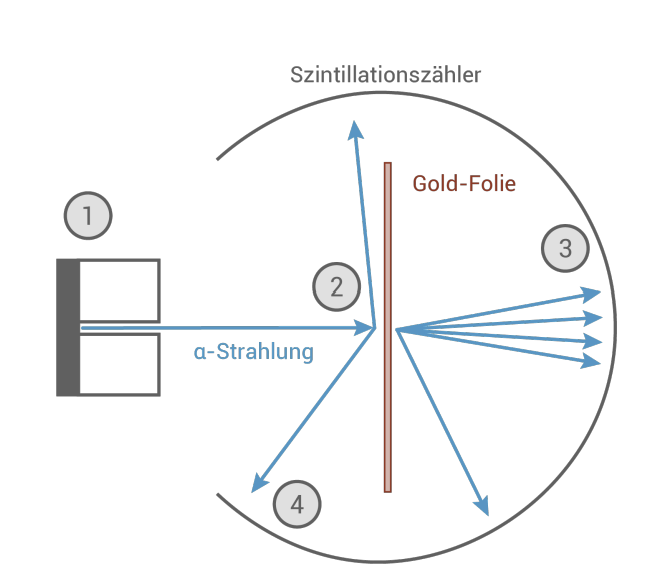
1. Ein radioaktives Präparat sendet $\alpha$-Strahlung in Form von Heliumkernen aus.
2. Die $\alpha$-Teilchen treffen auf eine sehr dünne Goldfolie und werden dort gestreut.
3. Der Großteil der $\alpha$-Strahlung passiert die Folie ohne große Ablenkung.
4. Ein kleiner Teil wird stark abgelenkt, einzelne Teilchen werden sogar in Richtung der Quelle zurückgeworfen.
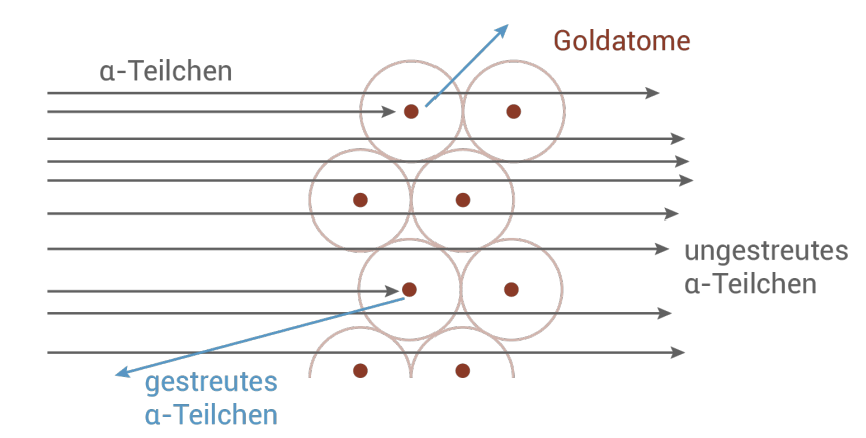
Genau diese Beobachtungen machten ältere Vorstellungen vom Atom als massiver Kugel unbrauchbar. Wenn Atome kompakte Objekte wären, müssten viel mehr Teilchen stark gestreut werden.
Rutherfords Lösung lautete deshalb: Atome bestehen zum Großteil aus einer leeren Hülle. Im Zentrum sitzt konzentriert die positive Ladung, also ein sehr kleiner, massereicher Atomkern. Die Elektronen befinden sich in der weit ausgedehnten Hülle.
Typische Größenordnung: Ein Atom hat etwa einen Durchmesser von $10^{-10}\,\mathrm{m}$, der Kern aber nur etwa $10^{-15}\,\mathrm{m}$. Wäre der Kern 1 mm groß, dann hätte die Hülle ungefähr 100 m Durchmesser.
Die Kernladungszahl $Z$ gibt die Zahl der Protonen im Kern an. Bei einem elektrisch neutralen Atom ist $Z$ zugleich die Zahl der Elektronen in der Hülle.
Mit Rutherford zerbricht das Bild der kompakten Kugel. Das Atom besteht aus Kern und Hülle. Der Kern ist winzig, positiv geladen und enthält fast die gesamte Masse.
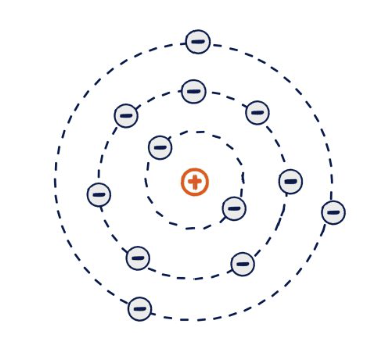
Bohr übernahm den Kern-Hülle-Aufbau, ergänzte aber einen entscheidenden Punkt: Elektronen dürfen sich nur auf bestimmten Bahnen oder Schalen aufhalten. Beim Wechsel zwischen diesen Zuständen nehmen sie Energie auf oder geben sie ab. So lassen sich Spektrallinien des Wasserstoffatoms erklären.
Seit 1926 beschreibt man Elektronen noch genauer mit der Quantenmechanik. Elektronen haben keine klassisch exakt festgelegten Bahnen. Stattdessen berechnet man Wahrscheinlichkeiten für Aufenthaltsbereiche, die als Orbitale dargestellt werden.
In den 1920er- und 1930er-Jahren wurde die Quantenmechanik theoretisch ausgearbeitet. Damit ließ sich die Elektronenhülle von Atomen viel genauer beschreiben als mit den älteren Modellen. An die Stelle fester Bahnen traten Orbitale, also räumliche Bereiche, in denen ein Elektron mit hoher Wahrscheinlichkeit anzutreffen ist.
Zentral sind dabei drei Gedanken: Die Position eines Elektrons ist nur mit einer gewissen Wahrscheinlichkeit beschreibbar, diese wahrscheinlichen Aufenthaltsbereiche heißen Orbitale, und Form sowie Größe eines Orbitals hängen vom jeweiligen Energiezustand ab.
Im quantenmechanischen Modell werden Orbitale durch vier Quantenzahlen beschrieben. Die Werte für $l$, $m$ und $s$ sind hier eine Folgerung aus der Quantenmechanik.
Spätestens sobald mehr als ein Elektron vorhanden ist, spielt die Spin-Quantenzahl eine wichtige Rolle.
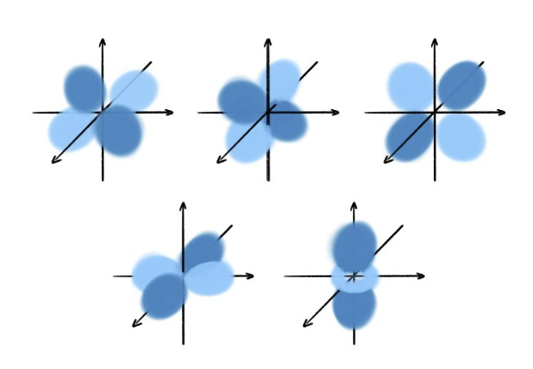
In der klassischen Physik können Größen wie Energie oder Ladung scheinbar jeden beliebigen Wert annehmen. In der Atomphysik stößt du aber auf feste, erlaubte Werte.
Die elektrische Ladung ist quantisiert: Alle gemessenen Ladungen sind Vielfache der Elementarladung. Auch bei Atommassen findest du keine beliebige Verteilung. Atome eines Elements können gleiche chemische Eigenschaften, aber unterschiedliche Masse haben. Diese Varianten heißen Isotope.
Wichtig ist dabei: Bei Atomen desselben Elements bleibt die Protonenzahl gleich. Genau sie legt fest, um welches Element es sich handelt. Ändern kann sich dagegen die Neutronenzahl. Dadurch entstehen verschiedene Isotope desselben Elements.
Ein Atom $^{A}_{Z}X$ wird durch die Kernladungszahl $Z$ und die Nukleonenzahl $A = Z + N$ beschrieben. Dabei ist $N$ die Neutronenzahl. Der Kern besteht also aus $Z$ Protonen und $N$ Neutronen. Bei einem neutralen Atom gibt $Z$ zugleich die Zahl der Elektronen in der Hülle an und entspricht der Ordnungszahl im Periodensystem.
Die atomare Masseneinheit ist definiert durch
$1\,\mathrm{u} = \frac{1}{12} \text{ der Masse von } {}^{12}_{6}\mathrm{C} \approx 1{,}661 \cdot 10^{-27}\,\mathrm{kg}$
Isotope eines Elements sind Atome mit gleicher Kernladungszahl $Z$ und damit gleicher Protonenzahl, aber unterschiedlicher Neutronenzahl $N$.
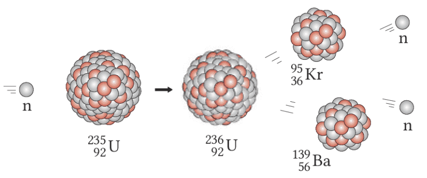
Kernspaltung kann auftreten, wenn ein einzelnes Neutron auf einen schweren Atomkern mit hoher Kernladungszahl trifft, zum Beispiel auf Uran-235. Der Kern wird instabil und zerfällt in zwei Kerne mittlerer Größe. Dabei werden zusätzlich mehrere Neutronen frei.
Außerdem wird Energie frei. Misst man die exakten Massen aller Reaktionspartner, dann ist die Masse vor der Spaltung geringfügig größer als die Masse danach. Diese Differenz nennt man Massendefekt.
Die fehlende Masse ist nicht verschwunden. Nach Einsteins Beziehung $E = mc^2$ sind Masse und Energie äquivalent. Ein Teil der Masse wird also bei der Kernspaltung in Energie umgewandelt. Weil Protonen und Neutronen im Kern durch starke Kräfte gebunden sind, können bei Kernreaktionen sehr große Energiemengen frei werden.
Die bei einer Spaltung frei werdenden Neutronen können weitere schwere Kerne treffen und dort neue Spaltungen auslösen. So kann eine Kettenreaktion entstehen, bei der die Zahl der Spaltungen und die frei werdende Energie sehr schnell anwachsen.
1942 baute Enrico Fermi den ersten Kernreaktor. Kurz darauf wurden auf Kernspaltung beruhende Atombomben entwickelt. 1945 führten die Abwürfe auf Hiroshima und Nagasaki zu einer katastrophalen Zerstörung. Kernspaltung ist deshalb nicht nur ein physikalisches Thema, sondern auch eine historische und ethische Frage.
Mit Spektren kannst du in den inneren Aufbau von Atomen hineinsehen. Genau das machte Linienspektren zu einem Schlüsselthema auf dem Weg vom Rutherford-Modell zum Bohr-Modell.
Das Spektrum des Sonnenlichts oder einer Glühlampe enthält alle sichtbaren Lichtfarben. Ein solches Spektrum heißt kontinuierliches Spektrum.
Bringt man dagegen ein Gas zum Leuchten, etwa in einer Gasentladungslampe oder beim Verdampfen von Salzen in einer Flamme, dann sendet es nur bestimmte, diskrete Wellenlängen aus. Eine Spektralanalyse zeigt dann ein Linienspektrum.
Jedes Element besitzt ein charakteristisches Muster von Linien. Diese Spektren sind so etwas wie die Fingerabdrücke der Elemente und erlauben ihren Nachweis.
Spektrallampen sind Gasröhren, an die eine Spannung angelegt wird. Die Gasentladung ionisiert das Gas teilweise und bringt es zum Leuchten. Im Alltag begegnen dir solche Lampen zum Beispiel in Leuchtstoffröhren.
Mit einem Handspektroskop oder einem optischen Gitter siehst du dann: Einzelne Atome in einem Gas senden nicht beliebige Wellenlängen aus, sondern nur ganz bestimmte. Daher vermutete man früh, dass diese Linien direkt mit der inneren Struktur der Atome zusammenhängen.
Ein kontinuierliches Spektrum enthält alle Farben eines Bereichs. Ein Linienspektrum besteht aus einzelnen diskreten Wellenlängen. Jedes Element hat dabei sein eigenes charakteristisches Muster.
Das Wasserstoffatom ist das leichteste Atom. Daher hoffte man, gerade hier dem Aufbau der Atome besonders gut auf die Spur zu kommen.
Im sichtbaren Bereich zeigt Wasserstoff vier besonders wichtige Linien. Auffällig ist: Mit abnehmender Wellenlänge rücken die Linien immer näher zusammen. Für noch größere Frequenzen liegen weitere Linien im ultravioletten Bereich.
| Lichtfarbe | \(\lambda\) in nm | \(f\) in \(10^{14}\,\text{Hz}\) | \(E = hf\) in eV |
|---|---|---|---|
| rot | 656,3 | 4,568 | 1,89 |
| türkis | 486,1 | 6,167 | 2,55 |
| blau | 434,0 | 6,908 | 2,86 |
| violett | 410,2 | 7,309 | 3,02 |
Zu jeder Spektrallinie gehört also nicht nur eine Wellenlänge, sondern auch eine genau festgelegte Frequenz und Photonenergie.
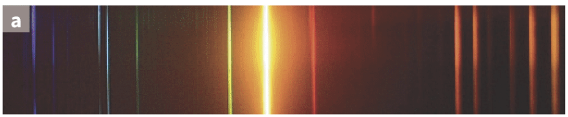
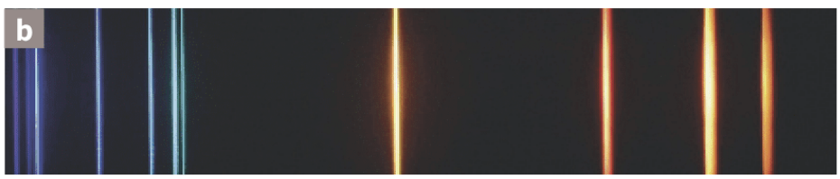
Johann Balmer fand 1885 für die sichtbaren Wasserstofflinien einen erstaunlich genauen Zusammenhang. Für die Frequenzen der Balmer-Serie gilt:
\(f = R \cdot \left(\frac{1}{2^{2}} - \frac{1}{n^{2}}\right)\), mit \(n = 3,4,5,\dots\)
Die Konstante \(R\) heißt heute Rydberg-Frequenz und hat den Wert \(R = 3{,}28964 \cdot 10^{15}\,\text{Hz}\).
Ursprünglich schrieb man die Formel oft für die Wellenlänge:
\(\frac{1}{\lambda} = R_{\infty} \cdot \left(\frac{1}{2^{2}} - \frac{1}{n^{2}}\right)\)
mit \(R_{\infty} = 1{,}09737 \cdot 10^{7}\,\text{m}^{-1}\).
Die Zahlen \(n = 3,4,5,6,\dots\) nummerieren die Linien. Solche Zahlen, mit denen man Messwerte eines Linienspektrums ordnet und berechnet, nennt man Quantenzahlen.
Setzt man statt der 2 allgemeiner eine Zahl \(m = 1,2,3,\dots\) ein, erhält man die Rydberg-Formel:
\(f = R \cdot \left(\frac{1}{m^{2}} - \frac{1}{n^{2}}\right)\), mit \(n > m\)
So lassen sich weitere Serien vorhersagen: Lyman (\(m=1\)), Balmer (\(m=2\)), Paschen (\(m=3\)), Brackett (\(m=4\)) und Pfund (\(m=5\)).
Erst Niels Bohr konnte 1913 erklären, warum die Balmer- und Rydberg-Formel so gut funktionieren. Seine Idee: Das Wasserstoffatom darf nur bestimmte stationäre Energien besitzen.
Für diese Energien gilt im Bohr-Modell:
\(E_n = -E_0 \cdot \frac{1}{n^2}\), mit \(n = 1,2,3,\dots\)
Die Grundzustandsenergie ist \(E_0 = 13{,}6\,\text{eV}\). Der Zustand \(n=1\) ist der Grundzustand. Mit wachsendem \(n\) steigt die Energie in Richtung \(0\); bei \(E=0\) ist das Elektron nicht mehr gebunden, das Atom also ionisiert.
Geht ein Elektron von einem höheren Zustand \(m\) in einen niedrigeren Zustand \(n\) über, dann wird ein Photon mit der Energie
\(E_{m,n} = E_m - E_n = hf = E_0 \cdot \left(\frac{1}{n^2} - \frac{1}{m^2}\right)\)
frei. Genau daraus entstehen die Linien des Emissionsspektrums.
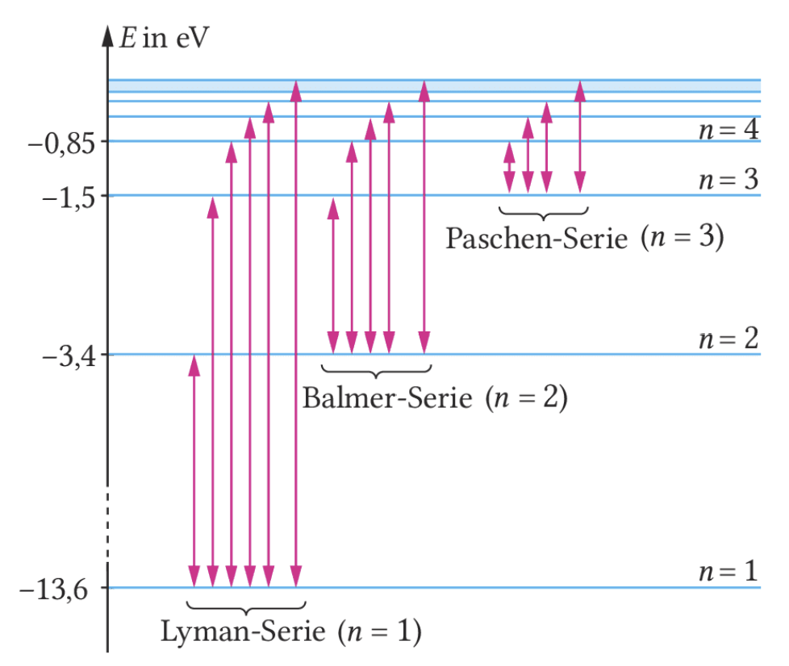
Damit wird auch die Rydberg-Formel verständlich:
\(f = R \cdot \left(\frac{1}{m^{2}} - \frac{1}{n^{2}}\right)\), mit \(m = 1,2,3,\dots\) und \(n > m\)
Diese von Johannes Rydberg 1888 formulierte Verallgemeinerung der Balmer-Formel sagt weitere Serien von Spektrallinien voraus. Genau diese Serien lassen sich im Wasserstoffspektrum tatsächlich finden.
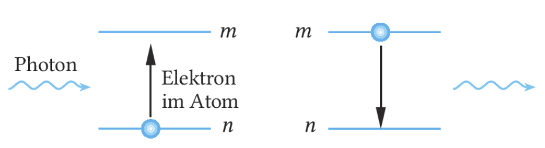
Werden Atome in einem Gas angeregt und fallen dann wieder in niedrigere Zustände zurück, senden sie Licht aus. Man beobachtet ein Emissionsspektrum: helle Linien vor dunklem Hintergrund.
Trifft dagegen ein kontinuierliches Spektrum auf Atome, dann können genau passende Photonen absorbiert werden. Es entstehen dunkle Linien im Spektrum: ein Absorptionsspektrum.
Deshalb zeigen Sterne meist Absorptionsspektren. Aus ihnen kann man die chemische Zusammensetzung von Sternen und Gaswolken bestimmen. Hier treffen sich Atomphysik und Astronomie direkt.
Der Franck-Hertz-Versuch zeigt experimentell, dass Atome Energie nicht beliebig, sondern nur in genau passenden Portionen aufnehmen können. Damit wird die Idee quantisierter Energieniveaus direkt messbar.
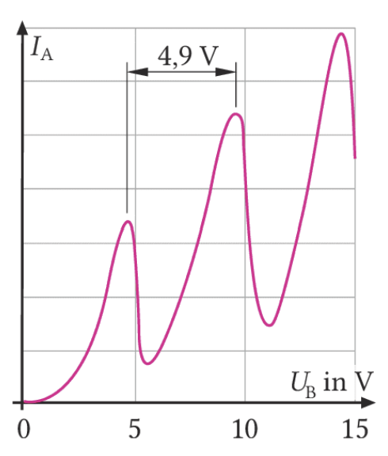
Die Linienspektren leuchtender Gase lassen sich damit erklären, dass Elektronen in Atomen nur bestimmte Energieniveaus einnehmen können. Fällt ein Elektron von einem höheren Energieniveau auf ein niedrigeres zurück, wird ein Photon frei.
Die dafür nötige Energie muss dem Atom zuvor zugeführt worden sein. Man vermutete deshalb: Ein Atom kann Energie nur dann aufnehmen, wenn diese genau der Differenz zwischen zwei Energieniveaus entspricht.
Genau diese Energiestufen wurden im Franck-Hertz-Versuch sichtbar. Für diesen Nachweis erhielten James Franck und Gustav Hertz 1925 den Nobelpreis für Physik.
Elektronen treten aus einer Glühkathode aus und werden in einer mit Quecksilberdampf gefüllten Glasröhre in Richtung einer Auffanganode beschleunigt. Mit steigender Beschleunigungsspannung \(U_B\) steigt zunächst auch ihre kinetische Energie.
Naheliegend wäre daher, dass der Anodenstrom mit wachsender Spannung einfach immer weiter ansteigt. Beobachtet wird aber ein anderer Verlauf: Der Anodenstrom steigt zunächst an, fällt dann plötzlich ab, steigt wieder und fällt bei einer höheren Spannung erneut ab.
Erreichen die Elektronen eine Energie von \(4{,}9\,\text{eV}\), können sie bei einem Stoß ein Quecksilberatom anregen. Sie geben dabei genau diese Energie ab, weil sie der Energiedifferenz zwischen zwei erlaubten Zuständen des Quecksilberatoms entspricht.
Nach dem Stoß besitzen die Elektronen nicht mehr genug kinetische Energie, um die Gegenspannung zwischen Gitter und Anode zu überwinden. Der Anodenstrom sinkt deshalb auf ein Minimum.
Erhöht man die Beschleunigungsspannung weiter, steigt der Strom wieder an. Bei \(U_B = 9{,}8\,\text{V}\) tritt ein zweites Minimum auf, weil die Elektronen nun auf ihrem Weg sogar zweimal genug Energie für eine Anregung gesammelt haben.
Bohr setzte diskrete Energieniveaus voraus. Im Potentialtopf-Modell kannst du sehen, wie diese Quantisierung aus dem Wellencharakter der Elektronen folgt und nicht nur eine bloße Annahme bleibt.
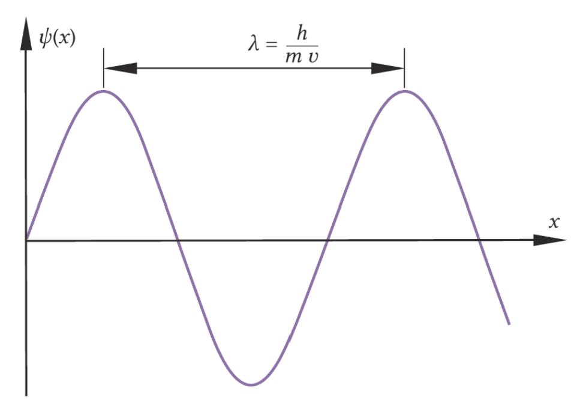
Die Grundannahme des bohrschen Atommodells ist die Existenz diskreter Energieniveaus. Damit lassen sich Linienspektren und auch der Franck-Hertz-Versuch erklären. Bohr begründete diese Quantisierung aber noch nicht tiefer.
Die heute gültige Erklärung geht von de Broglies Hypothese aus, dass Elektronen einen Wellencharakter besitzen. Schrödinger, Heisenberg und andere entwickelten daraus die Quantenmechanik.
Ein Elektron mit Geschwindigkeit \(v\) besitzt nach de Broglie die Wellenlänge
\(\lambda = \frac{h}{m \cdot v}\)
Mathematisch beschreibt man diese Elektronenwelle durch eine Wellenfunktion \(\psi(x,t)\). Anders als bei einer klassischen Welle bedeutet sie aber nicht einfach eine Auslenkung: \(|\psi(x)|^2\) beschreibt die Wahrscheinlichkeit, das Elektron bei einer Messung am Ort \(x\) zu finden.
Quantisierung tritt auf, wenn Elektronen nur einen begrenzten Raumbereich zur Verfügung haben, also gewissermaßen in einem kleinen „Kasten“ eingesperrt sind. Die Wände musst du dir dabei nicht materiell vorstellen; sie können etwa elektrischer Natur sein.
Im Modell des unendlich hohen Potentialtopfs gilt im Inneren des Topfs \(E_{\text{pot}} = 0\). An den Wänden bei \(x=0\) und \(x=a\) sowie außerhalb ist die potenzielle Energie unendlich groß. Das Elektron kann diese Wände also nicht durchdringen.
Weil die Wellenfunktion außerhalb verschwinden muss, wird sie zwischen den Wänden „eingespannt“. Es bilden sich stehende Wellen aus, ähnlich wie bei einer eingespannten Saite.
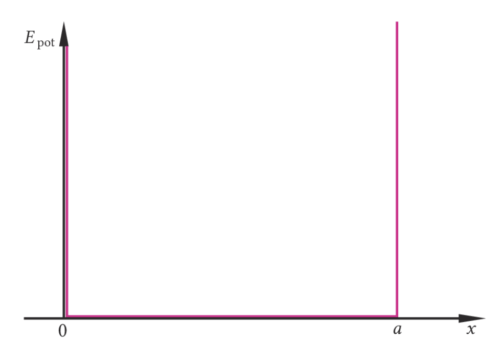
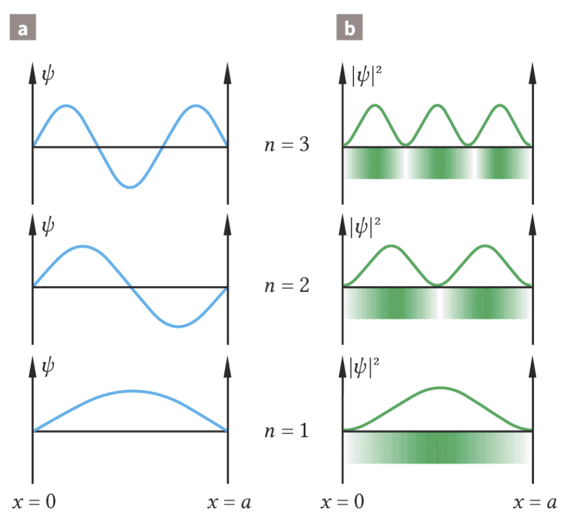
Im Potentialtopf sind nur Zustände möglich, bei denen ein ganzzahliges Vielfaches der halben De-Broglie-Wellenlänge in die Breite \(a\) passt:
\(\lambda_n = \frac{2a}{n}\), mit \(n = 1,2,3,\dots\)
Damit ist nicht jede Wellenlänge erlaubt. Die Elektronen können nur bestimmte Zustände annehmen, die durch die Quantenzahl \(n\) beschrieben werden.
Für den \(n\)-ten Zustand gilt im Inneren des Topfs:
\(\psi_n(x) = \sin\!\left(\frac{n\pi}{a}x\right)\)
und für die Wahrscheinlichkeitsdichte:
\(|\psi_n(x)|^2 = \sin^2\!\left(\frac{n\pi}{a}x\right)\)
An den Knoten gilt \(\psi_n = 0\). Dort ist die Wahrscheinlichkeit, das Elektron zu finden, gleich null.
Die Energie eines Elektrons in einem Potentialtopf der Breite \(a\) ist quantisiert. Sie kann nur die Werte
\(E_n = \frac{h^2}{8ma^2} \cdot n^2\), mit \(n = 1,2,3,\dots\)
annehmen. Zwischenwerte sind nicht erlaubt.
Das Potentialtopfmodell erklärt, warum es einen Grundzustand \(n=1\) gibt und warum ein Elektron nur durch Absorption eines Photons in einen angeregten Zustand \(n=2,3,4,\dots\) wechseln kann.
Für einen Übergang zwischen zwei Zuständen muss die Energiebilanz erfüllt sein:
\(E_n - E_m = h \cdot f\)
Ein Elektron in einem angeregten Zustand fällt meist nach sehr kurzer Zeit in einen tieferen Zustand zurück. Dabei wird ein Photon emittiert. Genau dieser Zusammenhang gilt auch im Atom: Photonen können nur dann absorbiert oder emittiert werden, wenn ihre Energie genau dem Unterschied zweier erlaubter Energieniveaus entspricht.
Das nennt man Resonanzabsorption. Deshalb sind Absorptionslinien scharf abgegrenzt: Photonen mit leicht anderer Energie können das Atom nicht anregen und passieren es ungehindert.
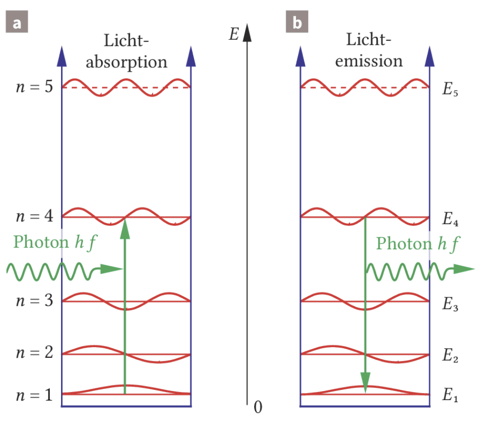
Der unendlich hohe Potentialtopf beschreibt reale Atome nur grob. Er ist eindimensional und vereinfacht den Verlauf der potenziellen Energie stark. Trotzdem zeigt er den entscheidenden Punkt: Die Gesamtenergie eines Elektrons kann nur bestimmte diskrete Werte annehmen.
Für das Wasserstoffatom gilt genauer:
\(E_n = -E_0 \cdot \frac{1}{n^2}\), mit \(E_0 = 13{,}6\,\text{eV}\)
Auch hier sind also nur bestimmte Energien erlaubt. Im Unterschied zum einfachen Potentialtopf werden die Abstände zwischen benachbarten Energieniveaus mit wachsendem \(n\) immer kleiner. Genau das passt zu den beobachteten Spektrallinien des Wasserstoffs.
Jetzt reicht reines Wiedererkennen nicht mehr. Du sollst Verbindungen zwischen den Themen herstellen, typische Fehler erkennen und die wichtigsten Ideen noch einmal aktiv wiederholen.
Nutze diese Seite wie einen Abschlusstrainer: erst selbst lösen, dann prüfen, dann bewusst begründen. Ziel ist nicht nur richtiges Ankreuzen, sondern ein zusammenhängendes Bild von Atommodell, Spektrum, Energieniveaus und Quantisierung.
Zum Schluss sicherst du die Kerngedanken noch einmal kompakt und bekommst seriöse Anlaufstellen zum Weiterarbeiten.
Atommodelle wurden nicht willkürlich erfunden, sondern aus Beobachtungen entwickelt. Demokrit liefert die Grundidee kleinster Teilchen, Dalton erklärt chemische Verhältnisse, Thomson entdeckt das Elektron im Atom, Rutherford trennt Kern und Hülle, Bohr erklärt Linienspektren mit festen Energieniveaus, der Franck-Hertz-Versuch zeigt diskrete Anregungsenergien experimentell und das Potentialtopfmodell begründet die Quantisierung aus dem Wellencharakter der Elektronen. Das quantenmechanische Modell beschreibt Elektronen schließlich als Wahrscheinlichkeitswolken in Orbitalen.
Die inhaltliche Grundlage dieser Seite ist zusätzlich dein bereitgestellter Stoff zu Demokrit, Dalton, Thomson, Rutherford, Bohr, Quantisierung und Orbitalmodell.